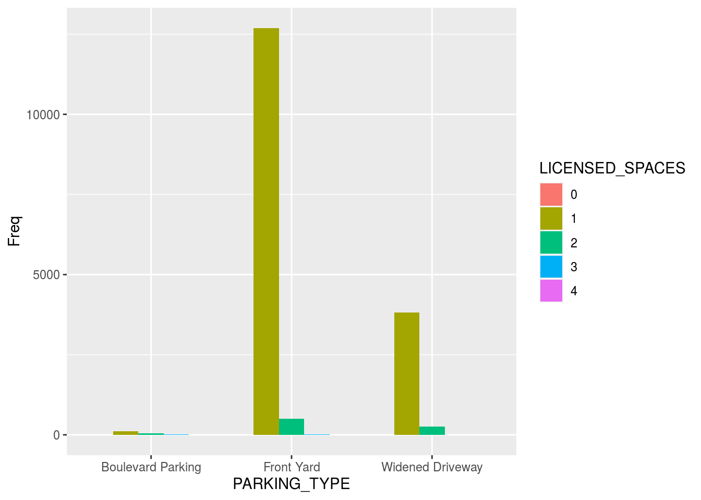

Abstact
This study obtained the data of Front Yard Parking in Toronto City from Toronto Open Data Portal. After processing the raw data, ggplot2 is used to make a grouping bar chart. It turns out that Toronto has the most Front Yard type parking lots. At the same time, the ratio of 1 licensed space is the highest among 0-4. The result may have something to do with urban planning.
Introduction
This is a data set about Residential Front Yard Parking in Toronto, Canada. The dataset is downloaded from the Toronto Open Data Portal. Data is updated weekly. While the project is under way, update the data to Under-tapped 21, 2020. This project explores the quantitative characteristics of different parking types and the number of licensed spaces in Toronto. Licensed spaces means the number of parking spots and parking type means type of permit e.g. Front-Yard Parking, Widened Driveway etc.
install.packages("opendatatoronto")
## Installing package into '/home/rstudio-user/R/x86_64-pc-linux-gnu-library/4.0'
## (as 'lib' is unspecified)
library(opendatatoronto)
resource <- list_package_resources("https://open.toronto.ca/dataset/residential-front-yard-parking/")
data <- get_resource(resource)head(data, 10)
## # A tibble: 10 x 6
## `_id` LICENSED_SPACES PARKING_TYPE STREETNAME STREETNO WARD
## <int> <int> <chr> <chr> <chr> <chr>
## 1 645385 1 Front Yard WINEVA AVE 202 19
## 2 645386 1 Front Yard WINEVA AVE 203 19
## 3 645387 2 Front Yard WINEVA AVE 204 19
## 4 645388 1 Front Yard WINEVA AVE 205 19
## 5 645389 1 Front Yard WINEVA AVE 206 19
## 6 645390 1 Front Yard WINEVA AVE 209 19
## 7 645391 1 Front Yard WINEVA AVE 210 19
## 8 645392 1 Front Yard WINEVA AVE 214 19
## 9 645393 1 Front Yard WINEVA AVE 216 19
## 10 645394 1 Front Yard WINEVA AVE 221 19
data2 <- xtabs(~PARKING_TYPE + LICENSED_SPACES, data = data)
data3 <- as.data.frame(data2)
data2
## LICENSED_SPACES
## PARKING_TYPE 0 1 2 3 4
## Boulevard Parking 0 110 49 10 1
## Front Yard 2 12695 497 9 2
## Widened Driveway 1 3824 258 2 0Visualization
library(ggplot2)
ggplot(data = data3, mapping = aes(x = PARKING_TYPE, y = Freq, fill = LICENSED_SPACES)) + geom_col(position = "dodge")
Discussion
From the plot drawn using ggplot2, I found that parking type mainly has three classes, respectively is Boulevard Paking, Front Yard and Widened Driveway. Licensed spaces have five classes from 0 to 4. For Parking types, the amount of Front Yard has an absolute advantage, while the number of Boulevard Parking is very small. In terms of licensed spaces, 1 space has the largest number followed by 2 Spaces. The proportion of licensed spaces in other quantities is very low. According to the application of permit, space and building planning should be considered in future urban construction to be more suitable for single parking. And fully dig Boulevard and Widened Driveway parking potential. Especially in the official website of the licensing that have no remember of Widened Driveway parking https://www.toronto.ca/services-payments/streets-parking-transportation/applying-for-a-parking-permit/.